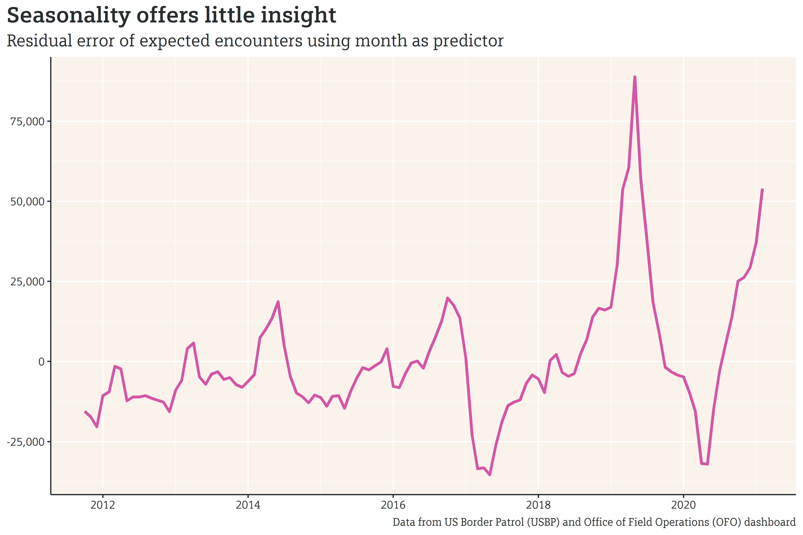
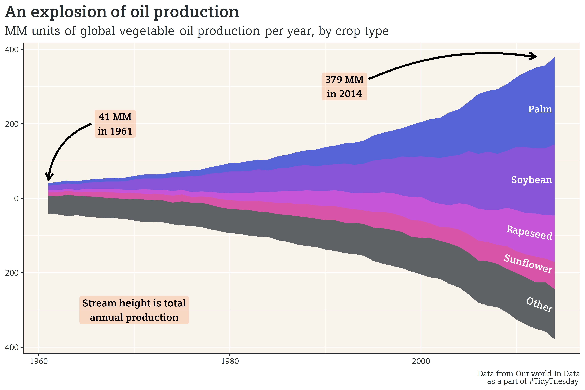

Last week, the Washington Post published an article postulating that the recent increase in crossings at the border cannot be attributed to Biden administration policies, but rather is a function of seasonal patterns and pent up demand due to restricted travel in 2020. While the article is well intentioned, a simple linear model that predicts crossings based on month shows seasonality is a poor predictor (or, at least is a poor predictor on its own).
Examining the Data
The US Border Patrol (USBP) publishes monthly data summarizing the number of encounters/crossings at the Southern border. Since November of 2020, border crossings have increased monthly, from about 70,000 in November to a little over 100,000 in February.

Looking at the long term monthly data, however, reveals two key aspects:
- 2019 was an exceptionally high year for crossings, and 2021 is on track to have a similar number of crossings;
- There seems to be a cyclical set of peaks and troughs in annual border crossing numbers.

Looking at the chart above, it’s difficult to determine which months correspond to peaks and troughs. Aligning by month offers a clearer picture of how monthly border crossings in each year compare to other years.

From this chart, it does appear that there is some semblance of a monthly pattern, albeit with extreme outliers of 2019, 2020, and 2021. Appearances, however, can be deceiving, and a mathematical model can help distinguish signal from noise. Using month as a predictive input, we can create a model that estimates the expected number of crossings in said month. If we look at the residual error (the actual number of crossings minus the predicted number of crossings) over time, we can get an idea of how well the model is performing. If seasonality is a good predictor of the number of border crossings, the model will accurately account for seasonal shifts, and the residual error plot would be expected to remove or reduce the “waviness” that appears in the crossing plot and only show the long term trends.

Plotting the residual error, however, doesn’t filter out seasonal noise. In fact, apart from the y-axis shifting down, the residual plot is strikingly similar to the crossings plot. This means that the month offers little power on its own in predicting the number of border crossings.
Closing Remarks
The Washington Post article makes good points that aren’t discussed fully here, but are worth mentioning:
- Those who planned on crossing the border in 2020 but couldn’t due to travel restrictions may have simply waited until now to travel.
- Unaccompanied migrants are arriving at the border in rates that exclude the possibility of seasonal patterns.
Also notable is that seasonal patterns - while not a good predictor of the number of border crossings on its own - may be more impactful in a more robust model. As a professor from the University of San Diego explains, conditions in the migrant’s country of origin and the countries they pass through are among a host of variables that play a significant role in determining if migrants make the trip to the US border. While a more robust model may be able to accurately incorporate season into its predictions, simply using month as a predictor, as the Washington Post does in their article, does not explain the surge at the border (evidenced by the fact that this equally simple model refutes their finding).
Finally, it should be noted that, above all else, there is a humanitarian crisis at the border. If you’d like to find a way to help or donate, Global Giving is an excellent resource.
Some Other Updates
Here’s what I’ve been working on recently:
- TidyTuesday: I’ve made my first contribution to #tidytuesday! For those who are unaware, TidyTuesday is a weekly data project in R for the R4DS (R for data science) community. Each week, a public dataset is released on Monday, allowing users to explore and create interesting visualizations and analyses based on the dataset. This week, a dataset based on global deforestation was released, but it came along with interesting information on the production of vegetable oil. I plotted the global annual vegetable oil production by crop type in the steamgraph below.

- Courses: I’ve continued with the machine learning and Bayesian courses, though I’ve descoped to roughly two days each week, as my personal schedule has gotten quite hectic. The ML course is excellent for understanding the theory that goes into each algorithm, but in practice, I expect that I will likely make use of the tidymodels R package’s relatively simple interface.
- Rmd: I’ve started writing my code in a R markdown document, which allows me to mix both code and prose. I mix in some off-the-rails/stream of consciousness commentary as I step through the process to get to a functional code. For regularly updated/critical code/projects, I’ll still stick to concise scripts.
That’s all for this week - as always, you can read through the code for this piece or for the tidytuesday piece on github. See you next week.
Citation
@online{rieke2021,
author = {Mark Rieke},
title = {Seasonality Is a {Weak} {Predictor} of {Border} {Crossings}},
date = {2021-04-05},
url = {https://www.thedatadiary.net/posts/2021-04-05-seasonality-is-a-weak-predictor-of-border-crossings},
langid = {en}
}